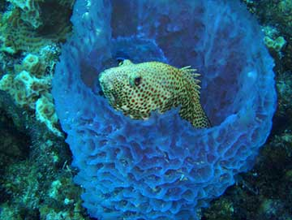

The ocean is filled with some of the strangest, most magical creatures you could possibly imagine.
Octopuses are some of the most emotionally intelligent creatures in the sea. This species is highly venomous, which makes them dangerous to humans despite their small size and docile nature.
Very beautiful, very powerful.
Sponges are one of the most curious life forms on Earth. They're extremely primordial, but have unique and complex inner mechanisms. They don't have true tissue or organ structures, which sets them apart from most animals.
Want to learn more? Click here!
Very beautiful, very powerful.
These creepy-crawly creatures are deep-sea scavengers that look like some kind of aquatic pill bug, to which they are related.
Very beautiful, very powerful.